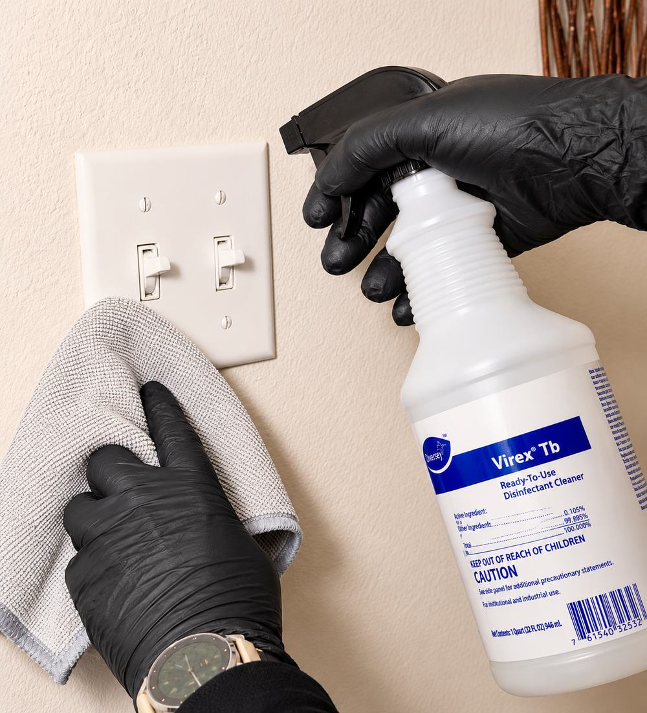
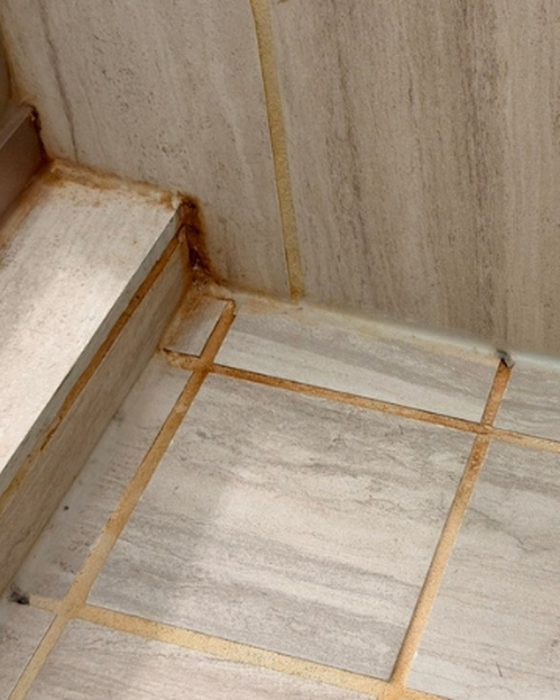
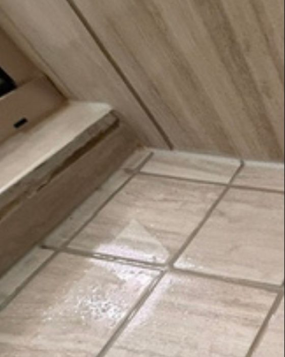
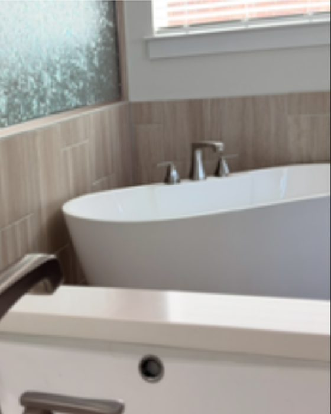
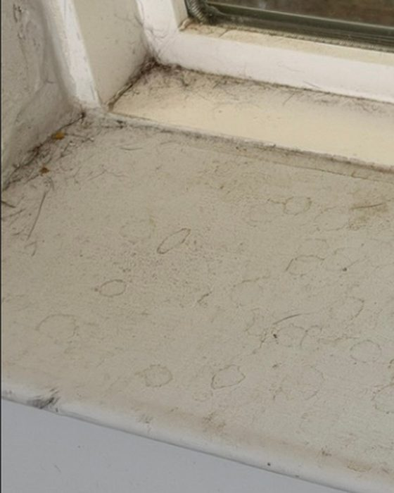
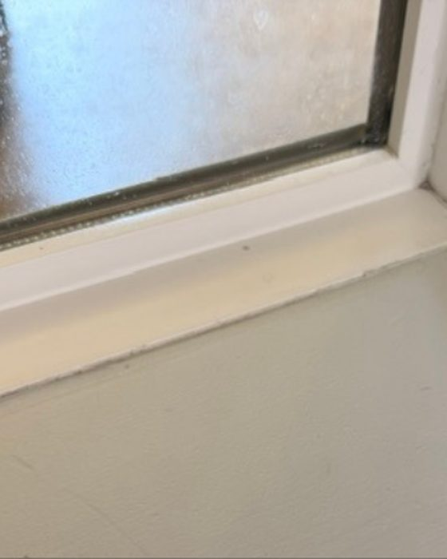
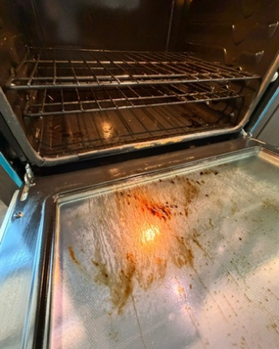
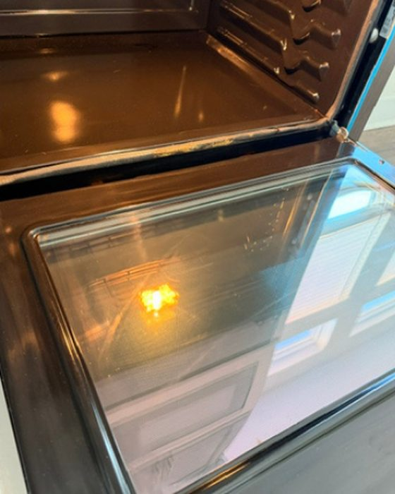
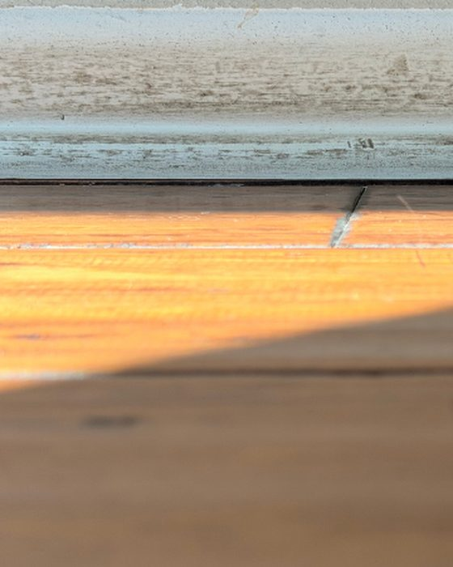
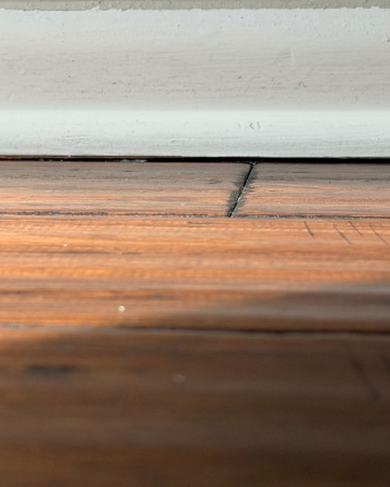

Your home, cleaned to a nurse’s standard.
Lux360 Clean was founded by a nurse. We measure a clean by what leaves the house, not by how much the counters shine.
- Insured and bonded
- Family owned, locally owned
- Free walkthrough first

Lux360 Clean was founded by a nurse with one simple purpose: to help people. Cleaning is the service. Serving people is the point.
Our one company value is Care Through Love of People, and it is what we hire for. It decides who we send into your house, which matters more than any product on the cart.
It isn’t what you see, it’s what you remove.
A room can look finished and still be carrying a load. Shine is not the measurement. What left the house is.
-
Remove debris where microbes live
Multistage HEPA-filtration vacuums, so what comes off the floor stays in the machine instead of going back into the air.
-
Break down protective biofilms
A film shields whatever is living underneath it. Spraying disinfectant on top of that film does very little, which is why this step comes before the next one.
-
Disinfect with proper dwell time
EPA-registered disinfectant, left on the surface for as long as its label says. Wiping it off early is the most common way a disinfection step quietly fails.
Non-toxic products where a non-toxic product does the job, because someone lives here afterward.


The left side is what we walked into.
Drag the handle across any photo.Each pair is shown side by side. Every pair here is our own work, shot before and after on the same job.







It’s not about shine. It’s about reducing microbial load.
Which is also why there is no price list on this page. We would rather look at the house first.
What we come out for.
Houses
- Health Reset Deep Clean
- The first clean. Detailed surface care, HEPA-filtration vacuuming and EPA-registered disinfection, to bring the house up before anything ongoing starts.
- Recurring Clean
- The same protocol on a schedule you set, so the house never slides back to where the reset found it.
- Maintenance Clean
- Regular upkeep between deep cleans, with non-toxic product options.
- Move In / Move Out
- An empty house, cleaned of what the last occupancy left behind, before you unpack or hand over the keys.
Offices and buildings
- Offices, Churches & Private Schools
- Shared rooms, where what one person carries in reaches everybody who sits down after them.
- Post-Construction Cleans
- Construction dust travels further than the work did and keeps settling for weeks.
- Janitorial Services
- Ongoing contract work for buildings that need someone every week.
No prices here, on purpose. Square footage does not tell you how long a house takes, so we quote after we have walked it with you. Here is how that works.
Who actually walks in.
You are handing your keys to people, so it is fair to know something about them before they are standing in your kitchen. Lux360 Clean is family owned and locally owned, insured and bonded. Denisse came to this from nursing, and the protocol on this page reads the way it does because of that.
Damaris and Naileth did an amazing job. Extremely thorough, kind.
Five stars, and exactly one review. We are not going to dress that up into a wall of testimonials. Here is what you can check instead:
- Insured and bonded, verifiable before we start.
- Yelp clocks our replies at about ten minutes.
- The walkthrough is free, and nothing about it obliges you to book.
- The photographs above are our jobs, not a stock library.
There is no price list, and that is deliberate.
Two houses of the same size can be a day apart in work. So we look first, then quote, and you decide after that.
- You call or text. (512) 962-0103 reaches us directly. Say roughly what you need and when.
- We walk the place with you. We look at the parts that set the price: floors, bathrooms, the kitchen, and whatever has been getting skipped.
- You get a private quote for your house. Written, for your rooms, no charge for the visit and no obligation to book.
- Call or text
- (512) 962-0103
- info@lux360clean.com
- Where we work
- Austin and the western suburbs, including The Hills, Lakeway, Bee Cave and Westlake.
Outside that and still interested? Call anyway. We would rather tell you no than have you wonder.
Book a free walkthrough.
(512) 962-0103Call or text the same number, or email info@lux360clean.com.